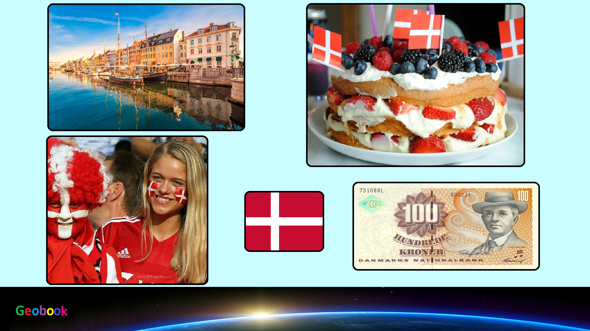

×

Denmark
____
Климат
Умеренный морской. Достаточно мягкий климат без резких перепадов температур и относительно равномерным выпадением осадков в течение всего года. Зима длится с декабря по март и характеризуется высокой влажностью и длительными периодами относительно холодной погоды - температура воздуха в январе составляет от 0ºC до -7ºС. Лето прохладное, средняя температура июля +15-16ºС.
Среднегодовое количество осадков колеблется от 800 мм. на западе Ютландии до 450 мм. на побережье пролива Большой Бельт. Максимальное количество дождя выпадает в осенне-зимний период, а минимум приходится на весну и начало лета.
____
